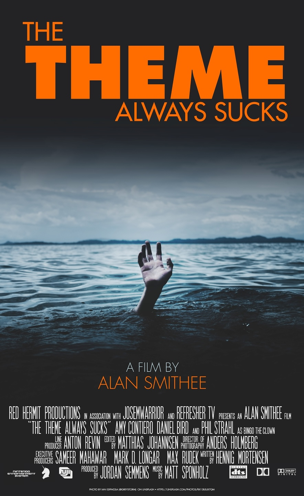
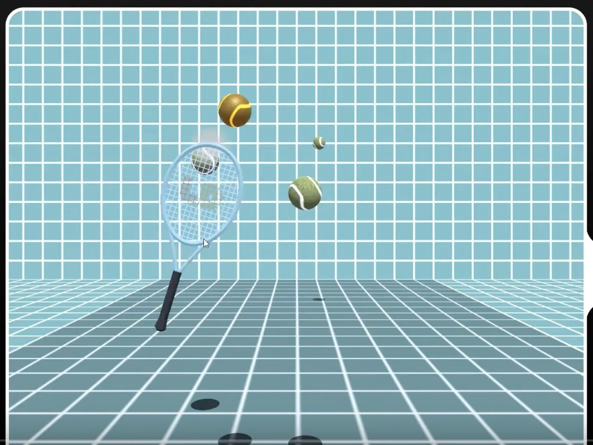
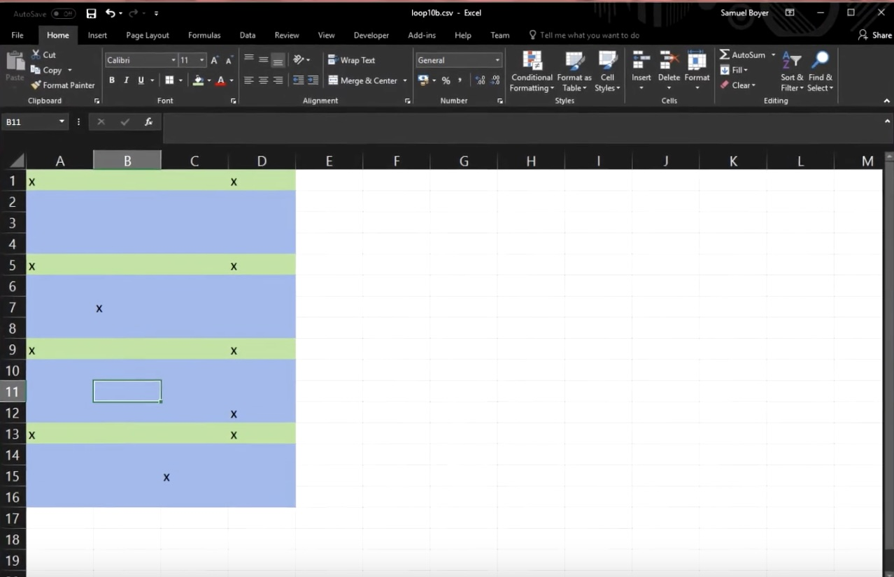
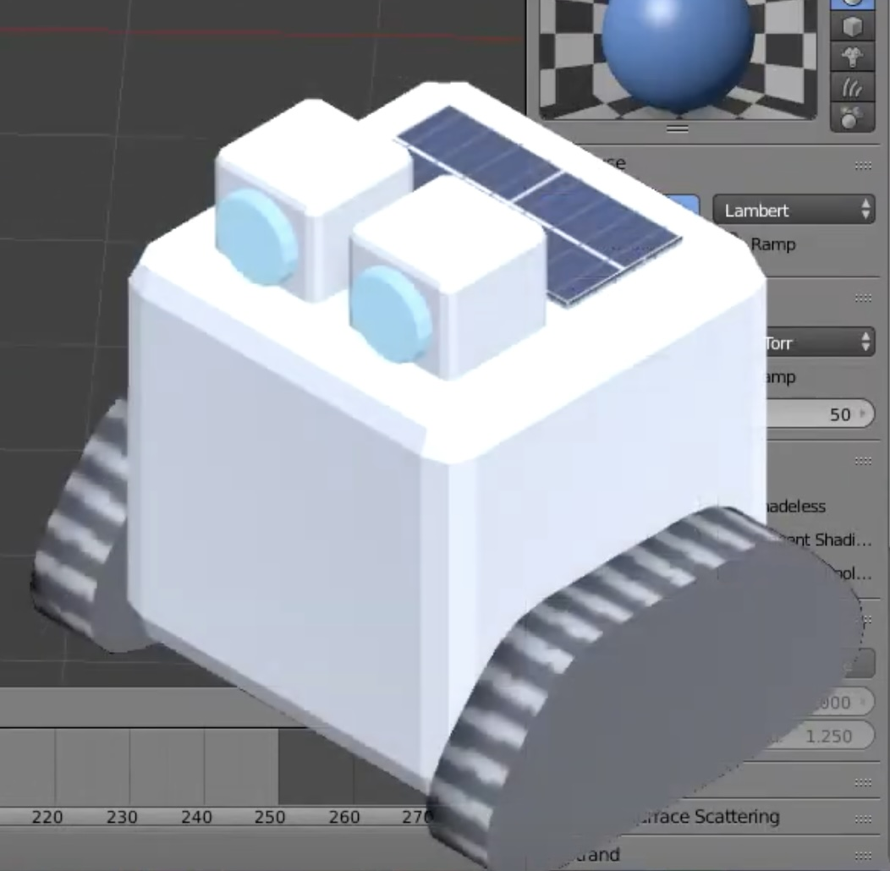

Making a game for Ludum Dare 42 (solo, at 18 years old, with no project planning experience)
- and yet, I will literally never be able to make a game more polished than this 😔
Sept 2018
This is a transcript of a YouTube video I made back in 2018 about making a video game in 3 days. I’ve added Editor’s Notes where I’ve changed my mind in the 6 years(!) since writing this script, so reading this post is undoubtedly a better experience.
(If you really want to see/hear the bad editing and low-quality v/o, though, I won’t stop you.)
Intro
A few weeks ago there was the 42nd instalment of a game jam called Ludum Dare. For 2-3 days, thousands of people around the world come together as teams or individually and try to make a video game as quickly and as completely as possible (with varying degrees of success). This is my third time participating and my work resulted in “Ludum Dare Simulator 2019”. (I’m not sure I’m actually allowed to use the Jam’s name like this… we’ll assume it’s okay.)
The idea of my game is that it simulates the Ludum Dare jam itself; you have to construct a game, within the game, by playing six different minigames. It’s it’s all very frantic and it was very fun to make - I honestly thought I wasn’t gonna finish it at all but somehow it did eventually get finished. After the jam, the games are rated by other participants, then the results come out - I think it’s safe to say that this time my results were… pretty good!
Final results
- Overall: 3rd (4.481 average from 28 ratings)
- Fun: 2nd (4.423 average from 28 ratings)
- Innovation: 7th (4.231 average from 28 ratings)
- Theme: 688th (3.385 average from 28 ratings)
- Graphics: 94th (4.327 average from 28 ratings)
- Humor: 23rd (4.188 average from 26 ratings)
- Mood: 12th (4.292 average from 26 ratings)
An additional challenge of Ludum Dare (and most jams really) is to follow a theme in your game, which gets voted on by the community and is announced as soon as the Jam starts. A few days beforehand, you get to see about 15 themes that might be selected, so I sat down with a few friends and tried to figure out some game ideas for each of themes - this all got put into an ‘theme ideas table’. Some of them were much better than others so I was sort of really hoping for one of the good themes! But as everyone knows, the theme always sucks.
|  |
|---|
| courtesy of Phil Strahl - he knows a thing or two about LDJam. |
The theme for Ludum Dare 42 is: Running out of space.
This was definitely not the theme I wanted at all - it was one of the least populated entries on my ideas table. I sat in front of an empty notepad for an hour trying to think of some new game ideas but just wasn’t getting anywhere… so decided to call a day (this was like 12AM so not really unexpected) and get started the morning after.
Day 1
I get a couple of new ideas! But they’re mostly just really bad puns and wouldn’t tend themselves well to a game. I wasn’t happy with how long I was spending having literally nothing made, so I made the executive decision to… just ditch the theme 😬 (They’re more like guidelines?? and I’m not too bothered about getting a lot position in the theme category.)
One idea from the brainstorm that was stuck in my head was from the ‘One minute’ theme category - Ludum Dare Simulator. The original idea was you’d have 60 seconds to produce a game, and it’d use WarioWare style minigames to contribute towards ‘building’ a game. It didn’t really work with the theme, even after I tried to retrofit a ‘disk space limitation’ on it - it’s clearly just a timer!
Anyway, a spark was better than nothing, so I got going. The very first thing that did was draw a UI mock-up on my whiteboard, and then I drew it again in Serif DrawPlus… and then I drew it again in Unity. That was a waste of a few hours. (Editor’s note: no it wasn’t! The clean UI was a huge part of why this game was successful. Mocking up in external software was very useful to quickly prototype some designs, but the whiteboard stage maybe could’ve been skipped since I wasn’t working with anyone in-person.)
Minigame 1: Physics
Once the menu was in Unity I started work on the first minigame. I knew what the ‘game data’ categories to work towards would be (Code, Art, Dialogue, Physics, Music, Effects), but not what game I’d make for each of them yet… The first one I knew what I would do was the Physics game - it’s just a simple tennis game, where the aim is to keep a rally going against… a wall?
|  |
|---|
| The tennis player is inside your walls |
I spent about an hour trying to make a tennis ball ‘look right’ (modelling and the textures unwrapping properly), and that meant that it got to 5PM on the first day before I’d even started scripting the minigame! So as soon as I got that working I moved straight on to the second game
Minigame 2: Effects
The Effects minigame is just a target practice game: targets appear on the screen and you have to click them. Like the Physics minigame it was fairly easy to code, but the time consuming bit was making particle systems. When you clicked on a target, I wanted them to fire huge fancy particle systems, to suit the name. I’m not sure if I should have been spending so much time on fancy particle effects considering nothing was working at the moment [i.e. the main game loop], but it made the minigame look fun, which probably helped its success.
Minigame 3: Dialogue
I started on the third minigame, dialogue, at about midnight; this one wasn’t too hard either. It’s a typing game where words appear on the screen and you have to use your keyboard to type out the words. One step here was finding a suitably big wordlist; fortunately I had one already from an earlier project. I wrote a short Python script to filter out a bunch of duplicate words and sort them by length.
Why sort by length? The more time you spend in a minigame, the more difficult they would get; e.g. on the tennis game, more tennis balls would appear, and on the Effects game, more crosshairs would appear. So on the Dialogue game, the words will get longer and more difficult to spell. Again, none of these features are really that difficult to code; the challenge is figuring out game design ideas and implementing them as quickly as possible.
This brought me to the end of the first day and things were not looking very good. (Editor’s note: Sure they were! there were two whole days left! I just wasn’t experienced enough to know I could close the game loop later on.) I had 3/7 minigames playable, but they weren’t really that fun to play? You could switch between them, but there was still no overarching game controller.
Day 2
For the start of Day 2 I decided to make a bit of progress on that game controller: I set up the ‘energy decline’ system: after spending too much time ‘building’ your ‘game’, you need to rest and recover your energy. (Editor’s note: I don’t think there was a specific design reason that I added this feature, other than for having a more accurate simulation of the Jam. But in hindsight I think it creates a risk/reward opportunity? You can still play on low energy, but your visibility is reduced/blurred, which lets the player choose exactly when to recover.)
Minigame 4: Code
After that I moved on to the next minigame, Code, although I still didn’t know what I was going to make… so needed to spend more time brainstorming. Eventually I decided the Code game would be one of those block-based robot instruction games (basically LightBot). You control a robot and you have to give it Forward, Back, Left/Right turn instructions to get to the destination, and it executes the commands by itself. ‘Okay, I can do that, can’t be too hard’, I thought. Oops, it took about five hours. Even worse, about three of those hours was just code for dragging and dropping instructions from a pool to the instruction list. Also the robot was currently just a white capsule - I’ll need to fix that later.
Minigame 5: Art
I knew what this minigame would be from the start: you’d be given a drawing and you had to recreate it on another canvas, using a limited palette and very basic drawing controls. Again, this took ages, mainly because I had to make up a bunch of reference sprites, and they had to look good because the whole gimmick was that you won’t be able to recreate them with the limited tools! I can’t do nice pixel art, and I really wasn’t enjoying the task, but I did most of them while streaming to Twitch which helped me get through. Eventually I drew enough.
The next hurdle was writing the algorithm to compare the player’s drawing to the reference sprite. I didn’t have any references for how I should do that, so I just threw a bunch of random colour distance calculations into the minigame script and hoped it would work… (it didn’t. but it was close enough to pretend it was thinking about something.)
This brought me to the end of the second day. At this point I have 5/7 minigames working; they’re looking better than before, but still not fully complete. And there’s still no overarching game controller.
Day 3
Minigame 6: Music
To start the third day I immediately got going on the final ‘main’ minigame, Music. It’s a straightforward Simon Says ‘drum loop recreation thing’. It gives you a sequence of drum hits and you have to play them back; the minigame script compares your input with its pattern and awards you based on that. That meant I had to create another accuracy scoring algorithm that cost me so much time the night before… Somehow, this version worked out really well the first time!
That meant that the music game only took about three hours to do. The drum pattern production pipeline I’d made was working really well - it meant I could type a drum loop in Microsoft Excel (Editor’s note: wtf???) and I could churn out a bunch of drum loops. They’re not very good drum loops - I’m not a beatmaker. (Editor’s note: I am now a beatmaker.)
|  |
|---|
| What fresh hell he hath wrought on this land |
All minigames done!
At this point all six ‘main’ minigames were done - in terms of code. They’re still using a lot of placeholder assets and generally not looking very nice, so I spent a lot of time refining the assets, adding juicy animations/transitions in here and there, etc. One big thing I had to go back and fix was the robot model in the code game. I used Blender to model which is maybe a bit too unoriginal in hindsight…
|  |
|---|
| look at this cute lil boi |
Then I focussed on adding sound effects around the place, to improve the atmosphere. Up until now, the game was unnervingly silent, which definitely needed to change.
The final stretch
Soon enough I was at six hours to go and there was still no actual game loop, because I kept putting it off. I’d been mulling it over how the game controller would need to behave throughout the jam, so I knew what I had to do for it; it was just a case of typing a ton of code as quickly as possible.
At about four hours ago I decided the game needed a soundtrack… possibly a mistake because that took about half an hour to find tracks, trim them to be loopable, putting them in a ‘music controller’ script, etc… spending lots of time I didn’t really have.
Minigame 7: Debug (T-3hrs)
At three hours ago, most of it was coming together, but it was still missing a final piece - the Debug minigame. I had this idea from the start; once you’ve done making your game you progress to the Debug minigame, which is a really fast-paced final rush to eliminate as many bug as possible. It was a very unnecessary addition to the game (Edior’s note: disagree!), but I just thought it would sell the idea of this frantic development cycle, and gives a really nice finale to the playthrough.
(Editor’s note: ironic that I was using my final hours of a jam making a minigame about squashing bugs in the final hours of a jam, instead of squashing bugs in my game…)
It was a final race to draw pixel art and write code as quick as I could.
Time’s up!
I got the Debug minigame done, thankfully, and had about 30 minutes left to throw in as many extra bits of polish as possible. There were a lot of things I wanted to improve, but to be honest I was just glad that I even got the game finished!
I was finally ready to build and upload the game to the Ludum Dare website, exactly on time.
Reflections
Considering how tight I was working to the deadline, there were so many opportunities, especially on the final day, for just one thing to go wrong and everything would have fallen apart. This was terrible planning on my part and it should be a lesson for everyone: “Don’t make your entire game in the last 10 minutes of a 72 hour game jam.”
(Editor’s note: Not sure I agree with this. If you understand you/your team’s capabilities, and are good at estimating how long it will take to ‘do/make X thing’, then it’s okay to put critical tasks off until later. Sometimes you have to do it, because the critical component can’t be made until the smaller parts are made; sometimes it makes the task easier because the design can be refined as you build up to it; and sometimes it’s a mistake to make components so sequentially. In the case of this game, I definitely could have worked on the overarching game loop script earlier in development, which would have decreased the risk of ‘not finishing’; but arguably the six/seven minigames were equally critical to the ‘fun’ of the game. ‘Player funness’ is a hard metric to prioritize tasks by!)
Once the jamming was finished, all entrants had 25 days to play and rate each of those games. Given I spent all my time developing, I had no time to do any playtesting* or QA, so was just hoping that reviewers would play the exact same way I did so bugs couldn’t be found… A few minor bugs were found by reviewers, but from what I could tell from people were just really enjoying it! It was a huge relief to see that I didn’t just waste three days making something that wasn’t even fun…
Comparing it to my first Ludum Dare game, Ketchup Quest, I thought this one was a bit more contentful and had more atmosphere, so I had an inkling that it would score slightly higher than that. The problem with these results is that it’ll be almost impossible to top it in the future!
Perhaps in future jams I should push the boat out a bit more…? I think the fact I was so familiar with Unity and C# it made it kinda trivial to implement the ideas - maybe in the future I should try using a different engine? (Editor’s note: disagree - jams are not a good time to throw out the tools you’re good at using. Trying to pick up new engines in a time-pressured environment does not tend to be enjoyable. Definitely do try out new engines, but maybe in advance of a jam 🙂)
Overall it was a really fun few days, and the amazing scores just added to that. I’d definitely recommend checking out the Ludum Dare site for yourself and trying out some of the games that everyone made. Some dev teams carry on working, and produce ‘post-jam’ versions of their games; maybe you’ll see ‘Ludum Dare Simluator 2019 DX’ hitting store shelves in the near future… but I don’t I don’t think so. I’ll be too busy with university :P (Editor’s note: the university course was time-consuming to say the least 😅)
If you’re interested in developing games yourself you totally should! I’d recommend downloading Unity, try out the tutorials, and once you’re confident enough, enter a game jam for yourself! It’s a really good learning experience, and Ludum Dare is an amazing, positive, welcoming community. I’d love to see your projects as well - if you make anything, let me know :)
Return to index.